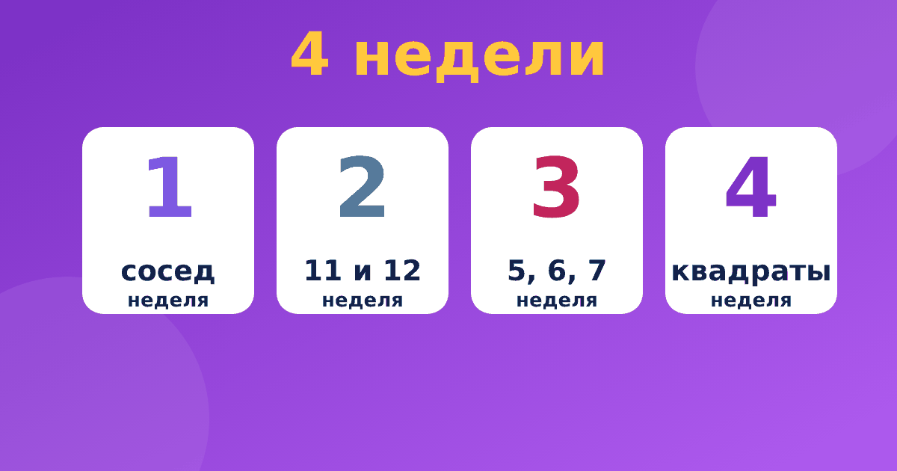

Быстрый счёт для детей: пошаговый план на четыре недели

Родители часто спрашивают: с чего начинать быстрый счёт для детей и как не потерять интерес на второй неделе. Ответ простой: идти от лёгкого к сложному и заниматься понемногу каждый день. Ниже план на четыре недели, который можно взять за основу и подстроить под своего ребёнка.
Что нужно знать до начала
Прежде чем браться за систему Трахтенберга, ребёнок должен уверенно складывать числа до 20 и знать таблицу умножения хотя бы в основном. Это не жёсткое требование: приёмы помогают и тем, кто ещё путается, но тогда занятия нужно вести медленнее. Если таблица пока даётся трудно, начните с материала как выучить таблицу умножения, а приёмы подключайте позже как интересное дополнение.
Система Трахтенберга для детей — это не замена школьной программе, а способ потренировать внимание и устный счёт. Заниматься лучше по 5–10 минут в день. Если ребёнок устал, остановитесь: короткое занятие лучше, чем длинное и со слезами.
Неделя 1. Сосед, нулик, половина
Цель недели: научиться находить соседа цифры (она справа), ставить нулик слева, считать половину числа без остатка, находить «до 10» и «до 9».
- Дни 1–2. Сосед и нулик на числах из трёх-четырёх цифр.
- Дни 3–4. Половина без остатка и нечётные цифры (+5).
- Дни 5–6. «До 10» и «до 9» для цифр от 1 до 9.
- День 7. Умножение на 2: удваиваем каждую цифру и помним перенос.
Неделя 2. Умножение на 11 и 12
Теперь ребёнок применяет соседа на практике. Начните с умножения на 11: правило «цифра плюс сосед» самое простое. Потом добавьте умножение на 12: удвоенная цифра плюс сосед. За неделю нужно пройти двузначные и трёхзначные числа без переноса и с переносом.
Неделя 3. Умножение на 5, 6 и 7
Здесь появляется половина соседа и правило «нечётная цифра даёт +5». Порядок такой: сначала умножение на 5 и 6, потом умножение на 7, потому что оно состоит из трёх частей. Правила для 9, 8, 4 и 3 при желании можно отложить на следующий месяц.
Неделя 4. Квадраты, два пальца, проверка
Последняя неделя самая весёлая. Начните с квадрата числа на 5: ребёнок получает результат почти мгновенно. Потом познакомьте с методом двух пальцев на простых примерах и закончите проверкой девяткой. В конце недели устройте «турнир»: пять примеров, и каждый нужно решить и проверить.
Как строить занятие на 10 минут
- 2 минуты: разминка, быстрые вопросы про соседа, половину и «до 10».
- 5 минут: два-три новых примера вместе со взрослым, вслух.
- 3 минуты: два примера самостоятельно и проверка.
Не торопите ребёнка и не засекайте время, пока приём не стал привычным. Скорость придёт сама, а вот страх ошибиться может испортить всё.
Как понять, что приём усвоен
Если ребёнок решает пять примеров подряд без ошибок и может объяснить, почему правило работает, переходите к следующему. Если ошибок больше двух из пяти, вернитесь к предыдущему приёму и закрепите его. Хороший признак: ребёнок сам придумывает примеры и предлагает проверить их по-другому.
Частые трудности
Ребёнок путает соседа слева и справа
Напишите число на листе и нарисуйте стрелки вправо от каждой цифры. Пусть ребёнок ведёт пальцем справа налево и называет соседа: «цифра 5, сосед ноль». Через несколько занятий путаница исчезает.
Ребёнок забывает перенос
Пишите перенос маленькой цифрой над следующей цифрой числа. Это нормальная подсказка, и убирать её нужно только тогда, когда ребёнок перестанет ошибаться.
Ребёнку стало скучно
Сделайте перерыв на несколько дней или смените формат: игра «Угадай квадрат», соревнование с родителем, тренажёр. Скука означает, что приём уже усвоен или что нагрузка велика, и в обоих случаях лучше остановиться.
Где тренироваться
Весь этот план собран в тренажёре «Быстрый счёт по Трахтенбергу»: 13 коротких модулей, объяснение каждого приёма в трёх вариантах, задания вместе со взрослым и адаптивные тренировки. Первый модуль «Сосед и нулик» можно пройти бесплатно. Отметьте в календаре четыре недели, и каждый день ставьте галочку после занятия: наглядный прогресс мотивирует лучше любых напоминаний. Если вы пропустили день, не навёрстывайте двойной нагрузкой, просто продолжите с того места, где остановились.